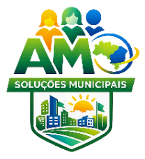
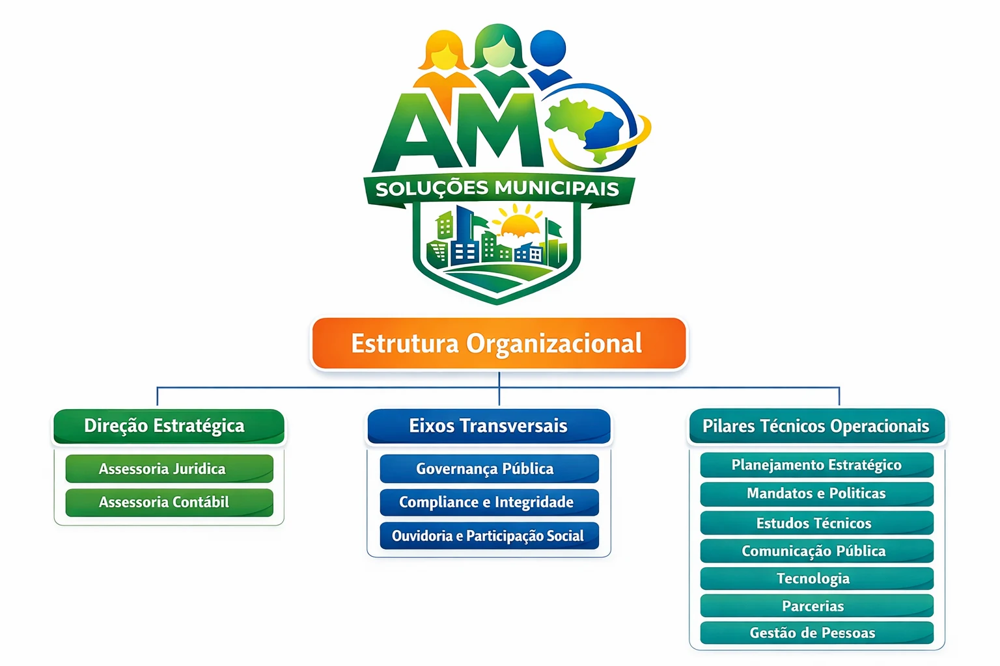
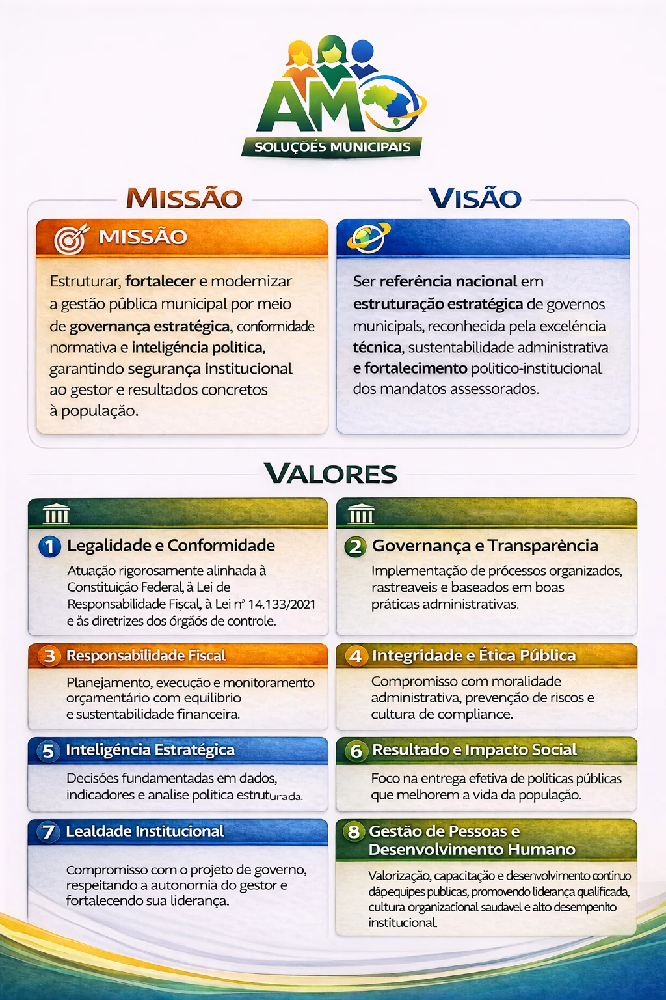
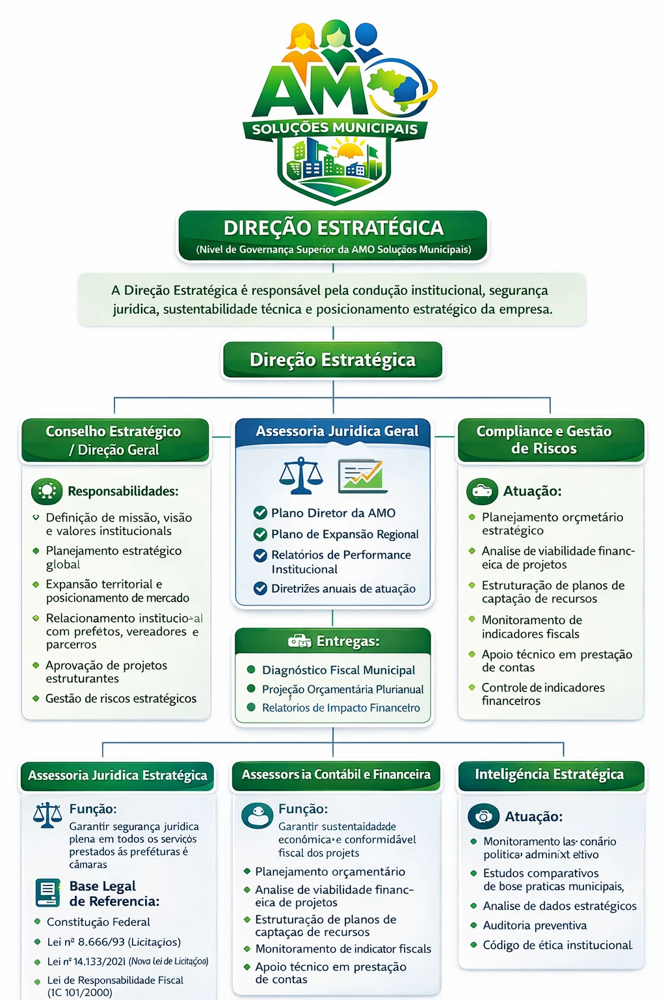
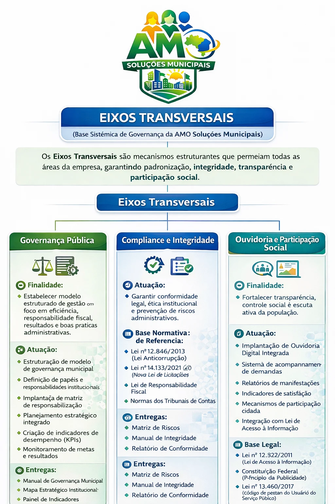
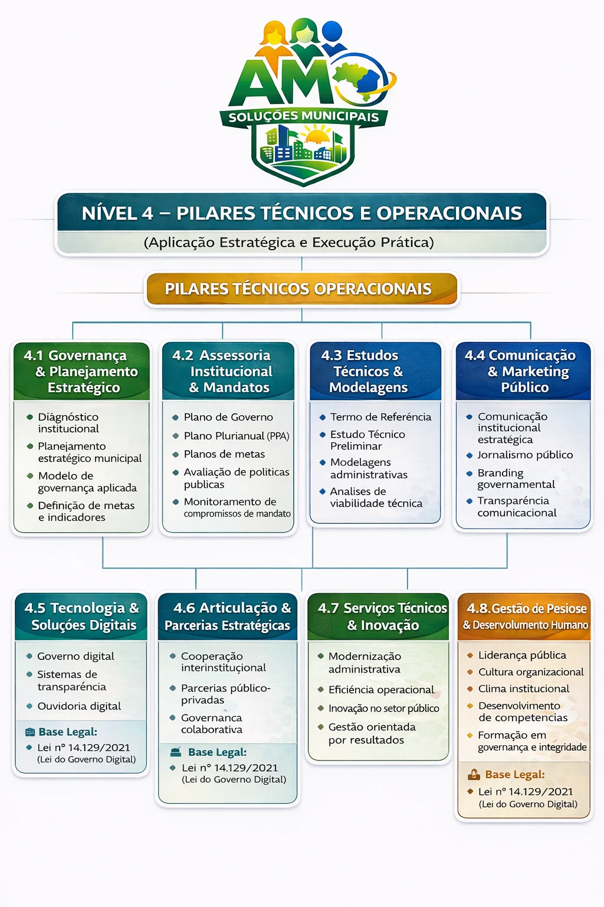

Modernizar a gestão municipal
Fortalecer a gestão com governança estratégica, conformidade e inteligência institucional, com foco em segurança administrativa e resultados para a população.
AMO SOLUÇÕES MUNICIPAIS
A AMO reúne planejamento, integridade, inovação e execução para apoiar prefeituras e câmaras municipais. Samuel Cotrim é sócio e CEO, conforme o currículo de 2026 e o cadastro empresarial consultado.

MODELO INSTITUCIONAL
O manual da AMO organiza seu modelo integrado de governança, integridade e inovação municipal.
IDENTIDADE INSTITUCIONAL
Objetivos, princípios e resultados esperados segundo o manual oficial.
Fortalecer a gestão com governança estratégica, conformidade e inteligência institucional, com foco em segurança administrativa e resultados para a população.
Estruturar governos municipais com excelência técnica, sustentabilidade administrativa e fortalecimento institucional.
Legalidade, eficiência, transparência, integridade, responsabilidade fiscal, gestão por resultados e inovação pública.
O modelo busca governança estruturada, integridade institucional, planejamento executável, serviços digitalizados, transparência ativa e uma cultura de trabalho orientada a resultados.
ACERVO INSTITUCIONAL
Selecione uma imagem para abrir o material em tamanho maior.





Registros de atuação em São Miguel do Passa Quatro e Santa Cruz de Goiás.
Em sessão da Câmara, Samuel apresentou a AMO e relatou trabalho de diagnóstico e consultoria no município.
O resumo da sessão registra a apresentação da atuação naquele momento.
Leia o registro no blog Fonte: Câmara Municipal ↗O PNCP registra a AMO como fornecedora homologada em contratação de comunicação e marketing institucional do Fundo Municipal do Meio Ambiente.
O objeto inclui conteúdos educativos, campanhas ambientais e divulgação das ações da Secretaria de Meio Ambiente.
Conheça essa frente Fonte: PNCP · processo 2660/2026 ↗CONTATO INSTITUCIONAL
Consultoria em gestão pública estratégica · Vianópolis, Goiás.
Veja o currículo de Samuel ↗ · Manual da AMO ↗ · Fontes e créditos ↗